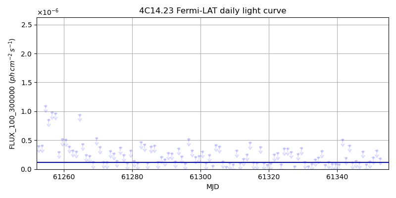
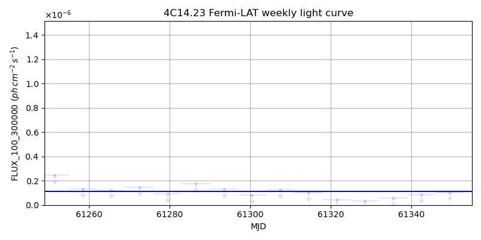
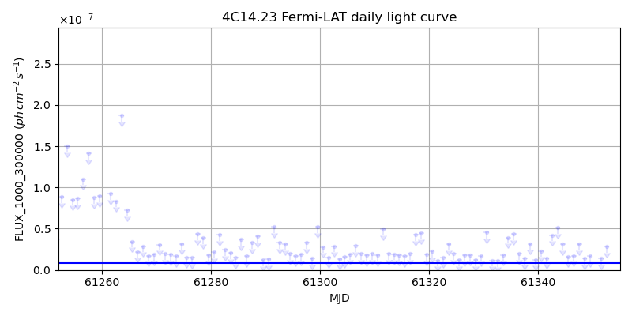
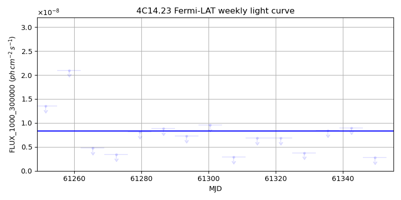

LAT Lightcurve site: https://fermi.gsfc.nasa.gov/ssc/data/access/lat/msl_lc/source/4C_14d23
NED: Query
Time of last update of this page: UT: 2026-11-13 16:18 (MJD: 61357.680)
| Property | Value |
|---|---|
| R.A. | 7:25:16.80 |
| Dec. | 14:25:12.0 |
| z | 1.039 |
| 3FGL SpectrumType | LogParabola |
| 3FGL PL Index | |
| 3FGL Flux_100_300000 | 1.14e-07 1 / (s cm2) |
| 3FGL Flux_1000_300000 | 8.34e-09 1 / (s cm2) |
| 3FGL Flux >200 GeV | 4.99e-12 1 / (s cm2) |
| 3FGL Extrap. Crab >200 GeV | 0.02 |
| 3FGL Flux After EBL Absorption >200GeV | 7.11e-14 1 / (s cm2) |
| 3FGL EBL Crab Fraction >200GeV | 0.00 |

| MJD | dMJD | Flux | dFlux | Frac3FGL | FracCrab>200GeV | EBLFracCrab>200GeV |
|---|---|---|---|---|---|---|
| 61348.50 | 0.50 | 8.07e-08 | 0.00e+00 | 0.00 | 0.00 | 0.00 |
| 61349.50 | 0.50 | 1.35e-07 | 0.00e+00 | 0.00 | 0.00 | 0.00 |
| 61350.50 | 0.50 | 2.00e-07 | 0.00e+00 | 0.00 | 0.00 | 0.00 |
| 61351.50 | 0.50 | 3.23e-07 | 0.00e+00 | 0.00 | 0.00 | 0.00 |
| 61352.50 | 0.50 | 1.88e-07 | 0.00e+00 | 0.00 | 0.00 | 0.00 |

| MJD | dMJD | Flux | dFlux | Frac3FGL | FracCrab>200GeV | EBLFracCrab>200GeV |
|---|---|---|---|---|---|---|
| 61321.50 | 3.50 | 4.07e-08 | 0.00e+00 | 0.00 | 0.00 | 0.00 |
| 61328.50 | 3.50 | 3.09e-08 | 0.00e+00 | 0.00 | 0.00 | 0.00 |
| 61335.50 | 3.50 | 5.93e-08 | 0.00e+00 | 0.00 | 0.00 | 0.00 |
| 61342.50 | 3.50 | 8.81e-08 | 0.00e+00 | 0.00 | 0.00 | 0.00 |
| 61349.50 | 3.50 | 1.04e-07 | 0.00e+00 | 0.00 | 0.00 | 0.00 |

| MJD | dMJD | Flux | dFlux | Frac3FGL | FracCrab>200GeV | EBLFracCrab>200GeV |
|---|---|---|---|---|---|---|
| 61348.50 | 0.50 | 1.39e-08 | 0.00e+00 | 0.00 | 0.00 | 0.00 |
| 61349.50 | 0.50 | 1.66e-08 | 0.00e+00 | 0.00 | 0.00 | 0.00 |
| 61350.50 | 0.50 | -1.00e+00 | 0.00e+00 | 0.00 | 0.00 | 0.00 |
| 61351.50 | 0.50 | 1.40e-08 | 0.00e+00 | 0.00 | 0.00 | 0.00 |
| 61352.50 | 0.50 | 2.81e-08 | 0.00e+00 | 0.00 | 0.00 | 0.00 |

| MJD | dMJD | Flux | dFlux | Frac3FGL | FracCrab>200GeV | EBLFracCrab>200GeV |
|---|---|---|---|---|---|---|
| 61321.50 | 3.50 | 6.81e-09 | 0.00e+00 | 0.00 | 0.00 | 0.00 |
| 61328.50 | 3.50 | 3.75e-09 | 0.00e+00 | 0.00 | 0.00 | 0.00 |
| 61335.50 | 3.50 | 8.44e-09 | 0.00e+00 | 0.00 | 0.00 | 0.00 |
| 61342.50 | 3.50 | 8.96e-09 | 0.00e+00 | 0.00 | 0.00 | 0.00 |
| 61349.50 | 3.50 | 2.76e-09 | 0.00e+00 | 0.00 | 0.00 | 0.00 |
--------------------------------------------------------- Using user-supplied coords: 7:25:16.80 14:25:12.0 2000 --------------------------------------------------------- FLWO UT night of: 2026-11-14 Local Sid. @ Midnight: 03:09 Sunset (-15.0) (local, UT): 18:35 01:35 Sunrise (-15.0) (local, UT): 05:42 12:42 Moonrise (local, UT): Moonset (local, UT): 20:50 03:50 Moon phase: 0.22 --------------------------------------------------------- AzTime LSID UT Obj_el Obj_az Mn_el Mn_az Sep. --------------------------------------------------------- 18:35 21:44 01:35 -33.4 40.9 20.1 218.2 166.4 19:05 22:14 02:05 -29.0 47.6 16.0 223.7 166.6 19:35 22:44 02:35 -24.0 53.6 11.6 228.6 166.7 20:05 23:14 03:05 -18.7 58.9 6.9 233.2 166.9 20:35 23:44 03:35 -13.1 63.7 2.0 237.3 167.0 21:05 00:14 04:05 -7.2 68.2 -2.2 241.2 167.2 21:35 00:44 04:35 -0.5 72.3 -9.0 244.8 167.4 22:05 01:14 05:05 5.1 76.2 -14.6 248.2 167.5 22:35 01:44 05:35 11.3 79.9 -20.4 251.4 167.7 23:05 02:14 06:05 17.6 83.6 -26.2 254.5 167.9 23:35 02:44 06:35 24.0 87.4 -32.1 257.5 168.0 00:05 03:14 07:05 30.4 91.3 -38.1 260.6 168.2 00:35 03:45 07:35 36.7 95.5 -44.2 263.8 168.4 01:05 04:15 08:05 43.1 100.2 -50.2 267.1 168.5 01:35 04:45 08:35 49.3 105.7 -56.3 270.9 168.7 02:05 05:15 09:05 55.4 112.3 -62.4 275.3 168.8 02:35 05:45 09:35 61.1 120.9 -68.4 281.1 168.9 03:05 06:15 10:05 66.2 132.6 -74.2 289.9 169.0 03:35 06:45 10:35 70.3 149.0 -79.6 306.2 169.1 04:05 07:15 11:05 72.5 170.9 -83.2 343.5 169.2 04:35 07:45 11:35 72.2 195.1 -82.1 35.1 169.3 05:05 08:15 12:05 69.4 215.7 -77.4 61.2 169.3 05:35 08:45 12:35 65.0 230.7 -71.8 73.4 169.4 05:42 08:52 12:42 63.9 233.4 -70.5 75.2 169.4 --------------------------------------------------------- Dark hours >55 deg.: 3.64 srcstart (UT): 2026-11-14 09:03 srcend (UT): 2026-11-14 12:41